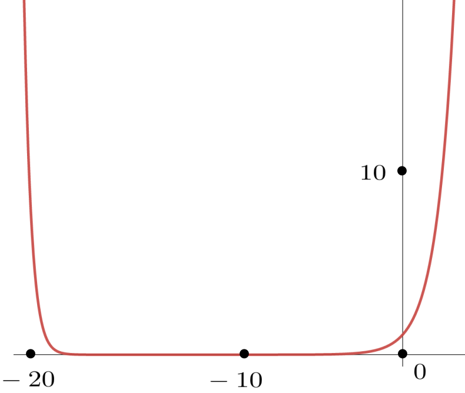
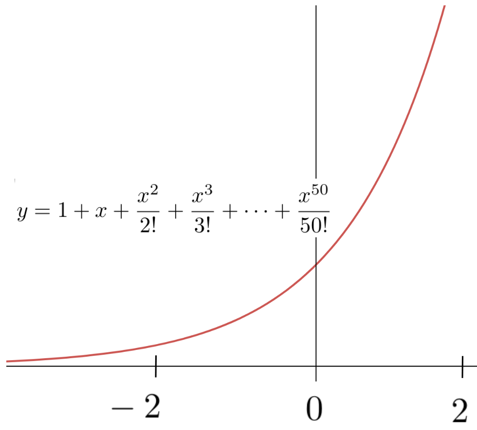

Section8.3Exponential Growth and Exponential Notation
It is now time to solve IVP(8.2) by finding an explicit formula for \(\exp(x)\text{.}\)
But how? Nothing really presents itself as a potential solution so what should we do? Since we dont seem to have any better options, lets see if we can guess a solution.
DIGRESSION: The Art of Guessing Effectively.
No, really. Guessing can be surprisingly effective.
You know this of course. Youve been doing it all of your life, but in the past especially in math classes guessing was probably discouraged so you tend to deny doing it, possibly even to yourself. Its OK. Guess anyway. We wont tell anyone.
The fact is that guessing is a tried and true solution technique and we encourage you to use it regularly. Guessing is nothing more, or less, than relying on your native intuition.
But effective guessing is a skill. You need practice to do it well and, unfortunately, you have probably not had much chance to practice that skill in the context of mathematics. So we encourage you to guess often from now on. But be aware that making a guess is a process, not an event. If you guess wrong, which is most likely, then you have a new, related problem to think about: All of your intuition said this was a good guess. Why didnt it work? The answer to that question almost always gives some insight into the original problem. Even a bad guess can be useful.
However a bad guess, indeed any guess, in isolation is a waste of time. You must also take the time to figure out why your bad guess doesnt work.
But the real danger in guessing the reason it is usually discouraged is that when you do guess correctly, or nearly so, it is very tempting to just move on from there. Dont do that.
Guessing correctly means that your intuition was very good. But intuition is unconscious. It is at least as important to understand where a good guess came from, and why it worked as it is to understand why a bad guess didnt work. But when you guess well it is extremely tempting to just take your good guess and run with it. This will invariably lead to confusion later. So, when you guess correctly take a few moments to think about the intuition that led you to that guess. Bring that intuition out of your unconscious mind and into your conscious mind. If you dont do that your guesses are a waste of your time.
END OF DIGRESSION
So lets take a guess. There is no need to get really crazy about it though. We already know that the Taylor polynomial of \(\exp(x)\) approximates \(\exp(x)\text{.}\) Maybe we can find an \(n\) large enough that the approximation becomes exact.
Problem8.3.1.
Show that none of the following is a solution of IVP(8.2).
The notation \(3!\) is read three factorial and means \(3\cdot2\cdot1.\) Similarly \(4!=4\cdot3\cdot2\cdot1\) and in general \(n!=n(n-1)(n-2)\ldots3\cdot2\cdot1\)
(a)
\(y= 1+x+\frac{x^2}{2!}+\frac{x^3}{3!}\)
Hint.
Observe that if \(y(x)\) is a solution then \(y-\dfdx{y}{x}=0\text{.}\)
Since the difference between \(y\) and \(\dfdx{y}{x}\) is that stupid one-millionth term which is very small it is clear that weve almost got something here. Surely we can handle that last term somehow!
Sadly no, we cant. In fact no polynomial will solve IVP(8.2).
Problem8.3.2.
That is, show that there is no (nonzero) polynomial that solves the differential equation: \(\dfdx{y}{x}=y.\)
Hint.
Consider the degree of the polynomial and the degree of its derivative.
Since no polynomial will work a fair question is: Why have we taken you on this wild goose chase3
In fact, we almost have a solution here. One million is a very large number, so one million factorial (\(1000000!\)) is inconceivably large. Thus for any value of \(x\) were likely to encounter that one millionth term, \(\frac{x^{1000000}}{1000000!},\) is so incredibly close to zero that it almost isnt really there. And if it isnt really there then
No, of course not. Although that last term really is practically zero it is not actually zero, no matter how small it is. As Newton said, In mathematics the smallest of errors must be dealt with.
So we havent solved our problem in the sense of having an explicit formula for \(\exp(x)\text{.}\) But we do know a great deal about it at this point. In particular we know that the Taylor polynomial \(1+x+\frac{x^2}{2!}+\frac{x^3}{3!} + \ldots +
\frac{x^{999999}}{999999!} + \frac{x^{1000000}}{1000000!}\) will be a very good approximation of \(\exp(x)\text{,}\) at least for values of \(x\) near zero.
But if there is no polynomial that solves equation(8.2) does that mean there is no solution at all? Certainly not. In fact, since that last term of the polynomial seems to be the stumbling block the solution is clear: All we need to do is not have a last term.
This is a startling idea but before we dismiss it, lets take our own advice from Section2.4. Well trust our intuition, but also examine it closely. What were saying is that the solution of equation(8.2) is:
where the dots at the end mean that the summation goes on forever. There is no last term.
You would expect a polynomial that doesnt end to be called an infinite polynomial but it is not. Such an expression is called an infinite series. Usually we just call it a series. A series is not a polynomial. That is, a polynomial is defined to have only finitely many terms and a series is defined to have infinitely many terms. We distinguish them from each other specifically so that we dont confuse a series with a polynomial.
An obvious question to ask is, Does this infinite series even mean anything? Or, equivalently, What does it mean to add up infinitely many numbers? These are excellent questions which will have to be addressed eventually. But for now we wont let them trouble us. Well just assume that \(y=1+x+\frac{x^2}{2!}+\frac{x^3}{3!}+\ldots\) makes sense, in the same way we assumed that differentials make sense and defer those questions until later.
Problem8.3.3.
Having set aside those deeper questions (for now), we can show that we have found the solution of our IVP.
(a)
Differentiate the series \(\displaystyle y= 1+x+\frac{x^2}{2!}+\frac{x^3}{3!} + \ldots \) termbyterm to show that \(\displaystyle \dfdx{y}{x}= y\text{.}\)
(b)
Show that \(y(0)=1.\)
Hint.
Yes, this really is as easy as it looks.
We would be remiss if we did not mention that we have lead you up to the edge of an abyss here. Part (b) of Problem8.2.3 is very suspect because it is not at all clear that the Sum Rule14.2.2 can be extended to infinite sums in any meaningful manner. In fact, this is a very delicate question. Sometimes the extension is valid and sometimes it is not. This is another of the foundational questions (like What is a differential?) that took mathematicians nearly \(200\) years to resolve and understanding that resolution requires the use of considerably more subtle tools than we have at this point. You will learn more about this in the next course. For now we will assert the prerogative of the teacher and simply tell you that in this case term-by-term differentiation still works.
The result of Problem8.3.3 seems to show that we have the exact solution of IVP(8.2) in the form of the infinite series,
This actually is a correct solution of IVP(8.2), and eventually you will learn to work with infinite series solutions of IVPs directly. But, unfortunately, we dont yet have the tools that allow us to do that. So we will have to find another way. What now?
The sketch below shows the graph of the polynomial
which we believe, from our work in Section7.4, should be a good approximation to \(\exp(x)\text{,}\) at least when \(x\) is near zero.

When we zoom in on the part of the graph which is near \(x=0\) we see that the following graph should be a reasonable approximation to the solution of IVP(8.2) in the interval shown.

In your earlier math courses you may have seen graphs that looked like this before. If not, then consider the following graphs of the exponential functions, \(y=2^x\) and \(y=3^x\) and notice that they are very similar to the graph of \(y=
1+x+\frac{x^2}{2!}+\frac{x^3}{3!}+ \cdots + \frac{x^{50}}{50!}\text{.}\)
This is much clearer when we graph all three functions on the same axes as seen here:
As you can plainly see near \(x=0\) they are indeed very similar.
Since the polynomial \(y= 1+x+\frac{x^2}{2!}+\frac{x^3}{3!}+
\cdots + \frac{x^{50}}{50!}\) is an approximation to the solution of IVP(8.2) it appears that either of \(y(x)=2^x\) or \(y(x)=3^x\) might be a viable candidate for the solution of our IVP. Is it possible weve had the solution in our hands all along? Lets differentiate \(y(x)=2^x\) to see if solves IVP(8.2).
If \(y(x)=2^x\) then \(y(0)=2^0=1\) so the initial condition is satisfied.
To check the differential equation it is tempting to assume that we can apply the Power Rule, giving us \(\dfdx{(2^x)}{x} = x2^{x-1}\text{.}\) But this cant possibly be correct because when \(x\) is negative then \(x2^{x-1}\) is also negative. But the slope of \(y(x)=2^x\) is positive everywhere as you can see from its graph.
In fact, none of our differentiation rules will give us the derivative of \(y=2^x.\) So we will have to go back to basics and find \(\dfdx{y}{x}\) from first principles, without using any of our Differentiation Rules.
Let \(y(x)=2^x\) and observe that \(\dx{y}\) is the (infinitesimal) difference between \(y(x+\dx{x})\) and \(y(x)\text{,}\) or
The differential in the exponent is a bit concerning. We will have to be clever.
We have become comfortable thinking of \(\dx{x}\) as infinitely small, but it should be clear that if we take \(\dx{x}\) to be a very small, but finite number, say \(\dx{x}= 0.0000001,\) we can use equation(8.7) to approximate \(\dfdx{y}{x}\) as accurately as we wish.
Replacing \(\dx{x}\) with \(0.0000001\) on the right side of equation(8.7) we get
This isnt bad for a first try! Do you see that we have almost satisfied the differential equation? We have \(\dfdx{(2^x)}{x}\approx (0.7)2^x\) when what we need is \(\dfdx{(2^x)}{x}=2^x\text{.}\) The constant factor is a bit too small. If it were \(1\) instead of \(0.7\) wed have the solution of IVP(8.2). This is hopeful.
Performing the same calculation using \(y(x)=3^x\) we see that once again we almost have a solution:
The initial condition is still satisfied and once again the differential equation part of IVP(8.2) is almost satisfied. But this time the coefficient \(1.1\) is a bit too big.
It stands to reason that there must be some number between \(2\) and \(3\) with the property that \(y=(\text{number})^x\) satisfies IVP(8.2). For historical reasons this number, whatever it is, has been named \(e\text{.}\) So the solution of IVP(8.2) is
\begin{equation*}
\exp(x)=e^x.
\end{equation*}
We originally named this function \(\exp(x)\text{.}\) That is still a valid name for it, just as \(\text{sqr(}x\text{)}\) is a valid name for the function sqr\((x)=x^2\text{.}\) However, just as the formula \(y(x)=x^2\) better represents the way we usually think about the squaring function (square the input variable, the notation \(y(x)=e^x\) better represents the way we usually think about the natural exponential function.
You should think of the natural exponential as this funny number \(e\) raised to the power of the input variable. However, it is a curious fact that the modern definition of the natural exponential is not \(e^x.\) The modern definition is actually the infinite series we derived earlier:
It would not necessarily be easy to compute the square root of \(e\) but were only asking about the meaning of our symbols here. Since \(e\) is a positive number we can take its square root and that is what \(\sqrt{e}\) means, even if we cant compute it. In precisely the same way \(e^{5/7}=\sqrt[7]{e^5}\text{,}\)\(e^{2/3}=\sqrt[3]{e^2}\) and in general if \(a\) and \(b\) are positive integers, \(e^{a/b}=\sqrt[b]{e^a}\text{.}\)
But what could the expression \(2^e\) possibly mean? Since \(e\) is not an integer it doesnt mean \(e\) copies of \(2\) multiplied together. Since \(e\) cant be represented as ratio of integers (because it is irrational after all) it doesnt mean some root of \(2\) raised to a power the way that say, \(2^{5/7}\) means \(\sqrt[7]{2^5}.\) This difficulty is compounded if we ask for the meaning of \(e^\pi\) or \(\pi^e\) since both \(e\) and \(\pi\) are irrational.
And this is not just a matter of not knowing the value of \(e\text{.}\) The difficulty is built into the real numbers. The same difficulty appeared in Section4.3.5 when we tried to extend the Power Rule to irrational exponents. Recall Comment4.3.36 This is weird.
Even if we cant compute it we need to find a way to give meaning to the expression \(e^x\) that works when \(x\) is irrational. Ideally, wed like our interpretation to be consistent with our understanding that \(e^3= e\cdot e\cdot e.\) This is precisely why we define natural exponential as an infinite series. It can be shown (though we will not show it here) that if \(m\text{,}\) and \(n\) are integers with \(n\gt0\) then
If there is only one solution to IVP(8.2) (there is) then \(y(x) =
e^x\) and \(y(x)=1+x+\frac{x^2}{2!}+\frac{x^3}{3!}+\ldots\) must be the same solution. Defining \(\exp(x)\) as
Recall that we mentioned in Comment4.3.36 that we would find two different ways to assign meaning to \(x^\alpha \) if \(\alpha{}\) is irrational. Equation(8.12) is an example of the first way to do this in the special case when \(x=e\text{.}\)
Of course we are still free to think of the natural exponential as \(e^x\text{,}\) regardless of which definition we use, and we encourage you to do that. It can be very helpful.
Use equation(8.13) to show that \(\inverse{e} \approx 0.36788\text{.}\) Compare this with the numerical value of \(\frac1e\approx\frac{1}{2.71828}\) you get from a calculator.
Use equation(8.13) to show that \(\sqrt{e} \approx 1.64872\text{.}\) Compare this with the numerical value of \(\sqrt{e}\approx \sqrt{2.71828}\) you get from a calculator.
The function \(y(x)=e^x\) is called the natural exponential function and \(e\) is its base just as \(2\) is the base of the exponential function \(y(x)=2^x\) and \(3\) is the base of the exponential function \(y(x)=3^x\text{.}\)
Of course, we only know that \(2\lt e\lt3\) so far. How might we find a better approximation to \(e\text{?}\)
Problem8.3.6.
Since we know that \(\exp(x)=
1+x+\frac{x^2}{2!}+\frac{x^3}{3!}+ \cdots \) solves IVP(8.2), it should be clear that we can approximate \(e = e^1\) by computing the sum of, say fifty, terms of the series.
Compute this approximation using your favorite computing technology to confirm that \(e\approx 2.718\text{.}\) (If you dont have any computing technology available just compute the sum of the first six terms.)
The upshot of Problem8.3.6 is that if we replace \(2\) with \(e\approx 2.718\) in equation(8.6), or if we replace \(3\) in equation(8.9) the constant the result should be closer to \(1\) than if we use \(0.7\) or \(1.1\text{,}\) respectively.
We used an approximation of \(e\text{,}\) not \(e\) itself, and
\(0.0000001\) is a very small, finite number, not a differential.
But the evidence is compelling that \(\exp(x)=e^x\) is the solution of the IVP(8.2). Henceforth then, we will reserve the letter \(e\) to designate the base of the natural exponential function.
You might ask, Why not just figure out what \(e\) actually is, and use that? Why use the letter \(e\text{?}\) The answer is that \(e\) is an irrational number much like \(\pi\text{.}\) Among other things this means that its decimal expansion never ends, so we use \(e\) for the same reason we use \(\pi\text{.}\)
We now have a new differentiation rule to remember. This one is particularly easy to remember: The natural exponential function is its own derivative,
Compute \(\dx{y}\) for each of the following, and use this to find the IVP that each one solves. (Use a substitution to make each one easier on your eyes.)
\(\displaystyle y=e^{2x}\)
\(\displaystyle y=e^{\pi x}\)
\(\displaystyle y=e^{\sqrt{2}x}\)
\(y=e^{rx}\) where \(r\) is an unknown constant.
Drill8.3.9.
For each of the following find \(\dfdx{y}{x}\text{:}\)
\(\displaystyle y=\sin(e^x)\)
\(\displaystyle y=e^{\sin(x)}\)
\(\displaystyle y=\cos(e^x)\)
\(\displaystyle y=e^{\cos(x)}\)
\(\displaystyle y=e^{5x}\sin(\pi x)\)
\(\displaystyle y=e^{x}\cos(3x)\)
\(\displaystyle y= \dfrac{x}{e^x}\)
\(\displaystyle y=\frac{e^x-1}{e^x+1}\)
\(\displaystyle y= \dfrac{e^x}{4x^2+3x-5}\)
\(\displaystyle y=e^{x^2+\sin(x)}\)
\(\displaystyle y= \frac{3\sqrt{x}+1}{e^x}\)
\(\displaystyle y= \tan(e^x)\)
Drill8.3.10.
Show that the equation of the line tangent to each function below at the given point is the given line.
Show that when we use Newtons Method7.2.6 to approximate the coordinates of the intersection point of the curves \(y = -x\) and \(y = e^x\text{,}\) we get the iteration formula
Starting with \(r_0=0\) compute \(r_1, r_2\text{,}\) and \(r_3\text{.}\) Compare your approximation with a solution obtained from whatever computing technology you prefer.
Problem8.3.12.Find the Pattern.
(a)
Compute \(\dfdx{y}{t}\) for each of the following:
\(\displaystyle y=te^t\)
\(\displaystyle y=(t+1)e^t\)
\(\displaystyle y=(t^2+t+1)e^t\)
\(\displaystyle y=(t^3+t^2+t+1)e^t\)
(b)
From your work in part8.3.12.a what do you expect \(\dfdx{y}{t}\) to be if
Show that your guess is correct or find the correct solution if you guessed wrong.
Drill8.3.13.
For each of the following, assume that \(x=x(t)\text{,}\)\(y=y(t)\text{,}\) and \(z=z(t)\text{.}\) Find an equation relating \(\dfdx{x}{t}\text{,}\)\(\dfdx{y}{t}\text{,}\) and \(\dfdx{z}{t}\text{.}\)
\(\displaystyle e^y=x^2+3z-2\)
\(\displaystyle \sin(xy)=(e^z)^y\)
\(\displaystyle \tan(x+z)=e^ye^x\)
\(\displaystyle e^{xyz}=3\)
\(\displaystyle x^2+y^2+z^2=2\)
\(\displaystyle e^{x^2+y^2+z^2}=2\)
Problem8.3.14.The Exponential Sum Property.
Since weve encouraged you to think of the expression \(e^t\) as the funny number \(e\) raised to the power \(t\text{,}\) it seems obvious that the rules of exponents apply so that \(e^{t+a} =
e^t\cdot e^a\text{.}\)
But nothing weve said so far actually makes this a true statement. Definition8.2.2 names the function and states one of its properties (that it is its own derivative), but that is all. This problem shows that we can use the definition to conclude that \(e^{t_a} =
e^t\cdot e^a\) must also be true.
(a)
Show that \(y=e^{t+a}\) satisfies \(\dfdx{y}{t}=y\) for any constant \(a\text{.}\)